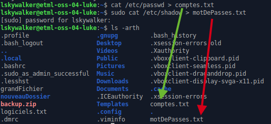

As-tu déjà entendu qu'un mot de passe devait avoir une certaine complexité pour des raisons de sécurité ?
Et as-tu cru cette explication ?
Aujourd'hui, plutôt que de croire, tu vas voir de tes propres yeux si c'est vrai ou pas en tentant de hacker ton propre mot de passe !
Compétence visée
- Mesurer la force d'un mot de passe
Fondamentalement, un(e) hacker(euse) est ?

Linux fonctionnel
Il faut avoir suivi l'atelier Installer Linux pour participer à ce laboratoire.
Comme la clé d'une porte de maison, un système d'exploitation requiert un login associé à un mot de passe pour que l'utilisateur puisse l'utiliser.
Ces informations doivent donc être stockées dans le système. De la même manière qu'on pourrait imaginer une sorte de pâte à modeler qu'on placerait dans la serrure d'une porte pour capter l'empreinte de la clé (comme le vol d'une empreinte digitale), on peut obtenir des informations sur les comptes utilisateurs d'un système qui sont stockés dans des fichiers de configuration.
Toutefois, les mot de passe ne sont pas stockés en clair dans les fichiers de configuration car cela serait trop facile à dérober. Ce qui est stocké, c'est une empreinte générée à partir du mot de passe. C'est un peu comme un code QR avec lequel on ne peut rien faire, par contre un smartphone peut le décoder.
Ce laboratoire se déroulera donc en 2 étapes:
- Récupérer l'empreinte du mot de passe
- Essayer différentes combinaisons
Terminal
Pour commencer, il faut démarrer un terminal:
Ajouter un compte de test
Pour simuler un mot de passe faible, ajoutons un compte avec le mot de passe 12345:
sudo adduser test
Copie des fichiers de configuration
Les informations de compte sont stockés dans /etc/passwd et les empreintes de mot de passe dans /etc/shadow et on va donc commencer par copier ces informations dans des fichiers:
cat /etc/passwd > comptes.txt
sudo cat /etc/shadow > motDePasses.txt

Tentative de hacking à la main
Puisque le fichier /etc/shadow contient les mot de passe, on peut simplement l'ouvrir avec nano et y trouver le mot de passe non ?:
nano motDePasse.txt

Comme décrit précédemment, ce n'est pas le mot de passe 12345 qui est inscrit dans le fichier mais une empreinte illisible... On ne peut donc rien faire avec ça et il nous faut alors un programme qui va, à partir de mot de passe aléatoires, générer des empreintes et les comparer.
Installation du programme de hacking
Vu que tu sais comment installer un programme avec apt, la seule indication est que ce dernier s'apelle john.
Pour vérifier qu'il a bien été installé, la commande john devrait retourner ceci:

Conversion des fichiers pour john
Dans le paquet john se trouve un programme additionnel appelé unshadow. Celui-ci permet d'adapter le format des empreintes de mot de passe à l'utilitaire:
unshadow comptes.txt motDePasses.txt > convertis.txt
En regardant le fichier convertis.txt tu verras qu'il ressemble beaucoup aux originaux et c'est surtout une question de formattage...
Lancement de john
Maintenant qu'on a le fichier compatible avec le programme de hacking, on va pouvoir commencer l'audit de sécurité sur le compte de test :
john -user:test convertis.txt
Si tout va bien, le résultat devrait ressembler à cela:

Changement de mot de passe
Maintenant que la procédure est connue, il suffit de changer le mot de passe du compte de test (par exemple 11111) pour vérifier si john le trouve rapidement:
sudo passwd test
Ensuite il faut refaire l'export, la conversion et l'audit:
sudo cat /etc/shadow > motDePasses.txt
unshadow comptes.txt motDePasses.txt > convertis.txt
john -user:test convertis.txt

Et ainsi de suite avec n'importe quel mot de passe que tu voudrais tester (celui que tu as utilisé pour tes comptes personnels par exemple)...
Comme alternative, si tu as confiance, tu peux utiliser un site comme par exemple https://www.uic.edu/apps/strong-password/.
Connaître les forces et les faiblesses d'un système informatique est un élément essentiel pour pouvoir évaluer et protéger ce dernier. Ainsi les outils de hacking sont utilisés à des fins d'audit et de manière officielle lorsque cela est nécessaire.
Sans être encore spécialiste, tu es désormais sensibilisé(e) aux dangers d'utiliser des mot de passe faibles et autonome pour mesurer la force d'un mot de passe.
Bien sûr, le programme john comporte plusieurs modes et options et s'il n'a pas trouvé ton mot de passe en quelques minutes, cela ne garantit pas qu'il n'est pas facilement crackable (sensible à une attaque par dictionnaire peut-être).